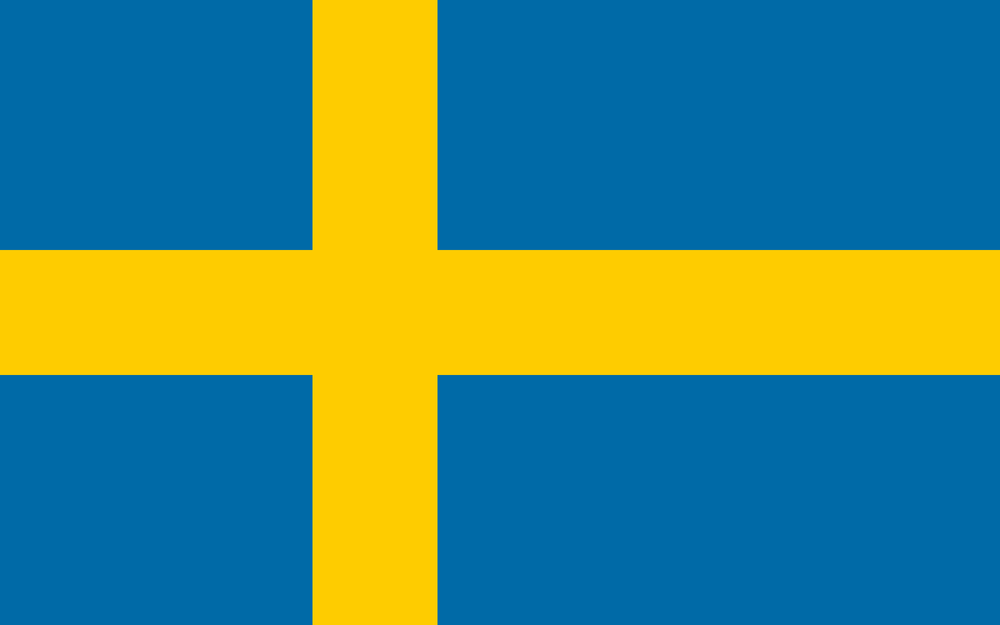

Sweden
Squad
| Number |
Name |
Club |
Birthdate |
| Goalkeeper |
| 12 |
Kalle Johnsson |
EA Guingamp |
28.01.1990 |
| 23 |
Kristoffer Nordfeldt |
Swansea City |
23.06.1989 |
| 1 |
Robin Olsen |
FC København |
08.01.1990 |
| Defender |
| 6 |
Ludwig Augustinsson |
Werder Bremen |
21.04.1994 |
| 4 |
Andreas Granqvist |
Helsingborgs IF |
16.04.1985 |
| 18 |
Pontus Jansson |
Leeds United |
13.02.1991 |
| 16 |
Emil Krafth |
Bologna FC |
02.08.1994 |
| 3 |
Victor Lindelöf |
Manchester United |
17.07.1994 |
| 14 |
Filip Helander |
Bologna FC |
22.04.1993 |
| 2 |
Mikael Lustig |
Celtic FC |
13.12.1986 |
| 5 |
Martin Olsson |
Swansea City |
17.05.1988 |
| Midfielder |
| 17 |
Victor Claesson |
FK Krasnodar |
02.01.1992 |
| 8 |
Albin Ekdal |
Hamburger SV |
Hamburger SV |
| 10 |
Emil Forsberg |
RB Leipzig |
23.10.1991 |
| 15 |
Oscar Hiljemark |
Genoa CFC |
28.06.1992 |
| 7 |
Sebastian Larsson |
Hull City |
06.06.1985 |
| 19 |
Marcus Rohdén |
FC Crotone |
11.05.1991 |
| 13 |
Gustav Svensson |
Seattle Sounders |
07.02.1987 |
| Forward |
| 9 |
Marcus Berg |
Al Ain FC |
17.08.1986 |
| 21 |
Jimmy Durmaz |
Toulouse FC |
22.03.1989 |
| 11 |
John Guidetti |
CD Alavés |
15.04.1992 |
| 22 |
Isaac Kiese Thelin |
RSC Anderlecht |
24.06.1992 |
| 20 |
Ola Toivonen |
Toulouse FC |
03.07.1986 |
| Manager |
|
Janne Andersson |
|
29.09.1962 |
| Games |
| Date |
Time |
Home |
Away |
| 18.06.18 |
14:00 |
Sweden |
South Korea |
| 23.06.18 |
20:00 |
Germany |
Sweden |
| 27.06.18 |
16:00 |
Mexico |
Sweden |